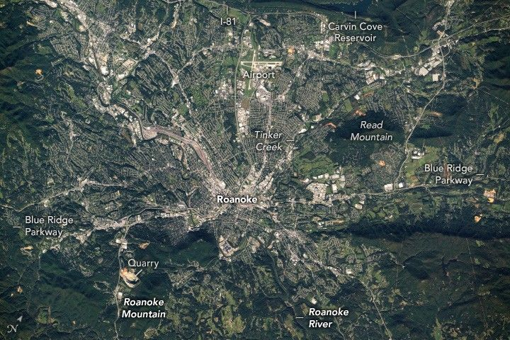

Capital of the Blue Ridge
An astronaut aboard the International Space Station photographed Roanoke, Virginia, a city in the Blue Ridge Mountains. The mountains are a segment of the greater Appalachian Range, which extends from northern Georgia to southern Pennsylvania. The Roanoke River flows from the northwest to the southeast and is visible along the southern portion of the city. Creeks, such as Tinker Creek in the eastern Roanoke urban area, connect the Carvin Cove Reservoir to the Roanoke River.
The reservoir sits just beyond the tall ridgeline along the top of the image, which, at its highest elevation, measures 700 feet (215 meters) above downtown Roanoke. The city’s urban footprint fills the lower-lying areas and begins to climb the flanks of nearby slopes in several places. However, steep, high ridges are challenging to build on, which limits development.
Both active and historic quarries and mines are abundant in the Appalachians due to the variety of rock and mineral resources—useful for energy, construction, manufacturing, and technology—found within the range. On the bottom left of the photograph, an active, circular quarry lies on the western edge of Roanoke Mountain.
Running through the center of the photo, partially obscured by tree coverage, is the Blue Ridge Parkway. The parkway is a historic, scenic road that spans almost 500 miles (800 kilometers) from its southernmost point in Ravensford, North Carolina, to its northern point at Rockfish Gap near Waynesboro, Virginia. The parkway connects a series of parks and preserves sites of cultural history along the route. It also acts as a wildlife migration corridor across watersheds that helps protect the region’s biodiversity.
The Roanoke-Blacksburg Regional Airport sits on the northwest side of the city between the Blue Ridge Parkway and Interstate 81. These roadways follow the Appalachian Mountains and connect Roanoke to cities as far north as Syracuse, New York.